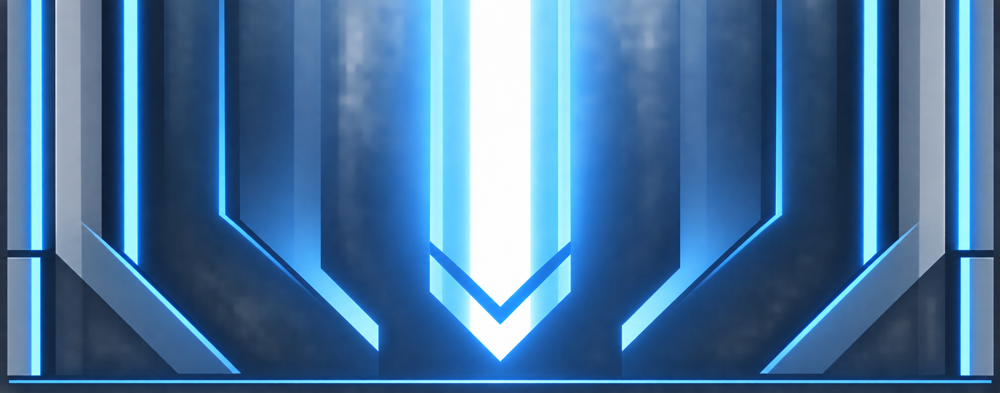

Classic 터미널
Penpot에서 확정한 싱글과 같은 마감·반사광을 더블에도 적용했습니다. 시작·끝 터미널은 바디와 간격 없이 이어집니다.
4번 원본

확정한 싱글 시작·끝 터미널
 시작 · 위 연결, 아래 닫힘
시작 · 위 연결, 아래 닫힘
 끝 · 위 닫힘, 아래 연결
끝 · 위 닫힘, 아래 연결
같은 디자인을 적용한 더블 시작·끝 터미널
 시작 · 위 연결, 아래 닫힘
시작 · 위 연결, 아래 닫힘
 끝 · 위 닫힘, 아래 연결
끝 · 위 닫힘, 아래 연결
바디와 조립
위에는 끝 터미널, 아래에는 시작 터미널입니다.
SVG 다운로드
각 파일은 1000 × 200입니다. 기본 채색·반사광·발광을 따로 편집할 수 있습니다.
100px 너비에서 보기
싱글 · 바디 65px
더블 · 바디 65px
싱글 · 길이 0
더블 · 길이 0
색 수정 전 SVG 보기